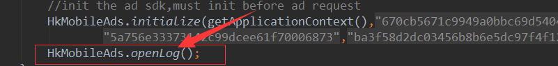
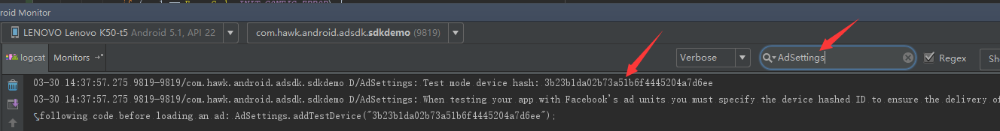

当代码全部按照接入流程集成完毕后，如果无法在嵌入sdk的app中看到广告，可以尝试使用logcat排查问题。Sdk提供有Log日志的开关， 在Application中调用 HkMobileAds.openLog()打开日志，以关键字" adsdk "过滤; 
※ 如果是正式发版，可以删除“HkMobileAds.openLog()”此行代码以关闭日志输出。
DeviceId是手机的一个唯一标识，由sdk内部算法生成，主要用于标识一个手机是接入方的测试手机。 将此ID传入SDK后，此手机所拉取到的广告即使被频繁点击也不会被屏蔽，也不会产生任何广告收益。
DeviceId的获取：
目前只有Facebook平台在测试需要DeviceID来防止屏蔽应用，所以这里只讲Facebook DeviceID获取方法。
集成facebook平台的依赖后，运行APP，正常拉取广告，然后以AdSetting | facebook 等关键字过滤Log，会看到以下输出：

※1、 如果使用测试广告ID时，务必添加上DeviceId，否则会拉取不到广告.
2、必须集成了Facebook的依赖和初始化成功，不然不会输出此日志。
3、集成之后仍会捕捉到这条Log，多拉取几次广告之后，再次尝试过滤
测试广告位作用有二：
1、每次只要成功都会返回一条广告用于测试，即便当前目标地区没有广告商投放广告也会返回广告。
2、所返回的广告均是测试广告，不会计入收益，仅用于集成测试。
如何获取测试广告位:
测试广告位id已写在前边配置广告位部分。请点击查看。
| 错误码 | 错误类型 | 描述 |
|---|---|---|
| 0 | ErrorCode.ERROR_CODE_INTERNAL_ERROR | 内部错误 |
| 1 | ErrorCode.ERROR_CODE_INVALID_REQUEST | 无效的请求 |
| 2 | ErrorCode.ERROR_CODE_NETWORK_ERROR | 网络超时：建议检查网络状态 |
| 3 | ErrorCode.ERROR_CODE_NO_FILL | 没有填充 |
| 4 | ErrorCode.HKSDK_NETWORK_ERROR | 豪客平台Sdk网络错误 |
| 5 | ErrorCode.ERROR_CODE_EXCEPTION | 豪客平台Sdk内部错误 |
| 10 | ErrorCode.INIT_CONFIG_ERROR | 初始化错误 |
| 9999 | ErrorCode.ERROR_UNKONWN | 未知错误 |